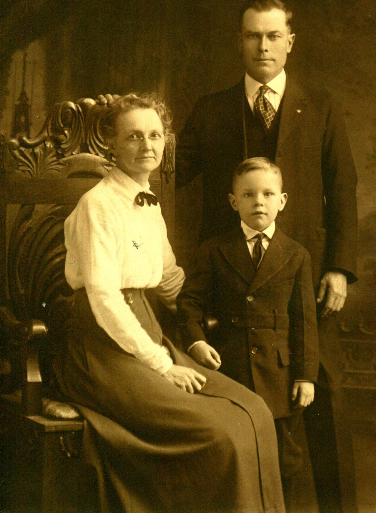

The Family Chronicle
No. 165 November 28, 2008
____________________________________________________________________

Undated photo of George and Emma (Ronan*) Watling and son, George Elbridge from Mother’s collection.
Corrected Feb/2010: (*Correction from original)
Annual fall visit to the Miramichi
I’ve just returned from my annual fall visit to Black River and, as is my custom, managed to tour most of the area including the road to MacBeath’s Bridge (no longer there, I’m told) and Wells Brook (once called Walls Brook; I wonder why the change?)
While there, Brother Ken and I visited relatives in Canobie and Bathurst; the next day, I had a brief visit with Everard and Bertie MacLean to pass along regards to Everard from a relative in Bathurst who served with him during WW2.
During the conversation, Everard mentioned the “dry hill”. Hadn’t heard that expression for a long time. Those who traveled the McKnight/Loggieville road would know that it referred to the high point between the Cameron Bridge and Carmel United Church – where the gravel pit is, I believe...
Hotel
I referred earlier to a “hotel” in Black River; more accurately, it was likely an inn or half-way house and I believe that it was located at the forks on the Little Black (Branch) River. (A half-way house was a country inn where horses and travelers could stop for a noon meal or stay overnight. Accommodation would likely have been in bunks in a common room although there would likely have been a single room or two as well. It is my understanding that the Mackenzie Road from Little Branch to Route 11, The Richibucto road, was the main artery between Richibucto and Bay du Vin. In fact, and I think that it carried that name officially until the 1940’s.
According to some census information passed to me by Shirley Mackay, the inn was being operated in 1851 by William Gibson and his family but later passed into the hands of people by the name of Currins. Currins was the census taker’s spelling; the name may actually have been Kierans, Curran, Cairns, or ???
The Family Chronicle (Copyright) is an occasional newsletter published by Don Glendenning and posted on the family website. It is intended to share information about my family, community and the times in which I grew up. While every effort is made to be accurate, errors are likely to occur. Comments, enquiries and information may be sent to 62 Queen Elizabeth Drive, Charlottetown, PEI, C1A 3A9. Tel: 902 892 5859. Email: don@glendenning.net Web: www.glendenning.net/don
Follow-up
The following was written as a follow-up to Don Glendenning’s “Mother’s apron,” printed in Family Chronicle #116 (April; 18, 2006).
Aprons have been around for a very long time.
Adam’s and Eve’s eyes “were opened, and they knew that they were naked: and they sewed the leaves together, and made themselves aprons” (Genesis 3:7).
Curiously, the word “apron” does not appear in the Index and Concordance to the King James Bible.
In addition to Adam, over time lots of men wore aprons—farriers, glassblowers, surgeons, chefs, shoe-makers, butchers, Napoleon’s sappers, Freemasons, and the like, but for most of history. Aprons were worn by women. The upper classes of course did not wear them (although some of their servants did). But then the upper classes didn’t carry eggs and apples or lift a pot off a hot stove. . While aprons were utilitarian marvels, they were also useful in times of crisis—major and minor. An apron could be flapped at an aggressive farmyard rooster, or waved in the air to signal someone working out in a field, or used to fan the face of one in discomfort. At tragic news, an apron could be wrung in the hands, an aid in controlling grief and anxiety. An apron could also be used to wipe the tears of a small boy who had stubbed his toe.
Until about forty years ago, practically every advertisement for kitchen appliances and household scenes featured an elegant slender woman wearing an apron as proof of domestic cleanliness and industriousness. Not many housewives wear aprons these days. They may wear a fancy apron for a few minutes when they set out dinner for guests, or they may wear a message apron (“Kiss the Cook”). In my experience, more men wear aprons these days, especially when it’s barbecue time, and most of these aprons also have messages (“She Didn’t Marry Me for My Cooking”).
When I think of my Grammie, grandmother Elspeth MacNaughton, I see her in an apron that had no messages written on it. Grandmothers didn’t need messages. In their plain aprons, they were pictures of order and comfort and stability and decency: they were the nobility of the Black River community I knew as a boy.
Donald Edge
May 2006
Heritage Buildings
The last issue of the NBGS Miramichi Branch News Letter mentioned a new website, at least new to me, www.historicplaces.ca I logged on and found it interesting but began to wonder about historic places in Black River.
And then I began to wonder as to the oldest homes in Black River. I really don’t know but have an impression that it could be the Frank MacLean place (where Ernie and Helen MacLean now live) or the home of Bill and Agnes (MacLean) Fowlie. I would guess that Neil Watling’s home, originally the home of John Macdonald, would have been built in the mid 1800’s.
I’d be delighted to hear from readers on this topic.